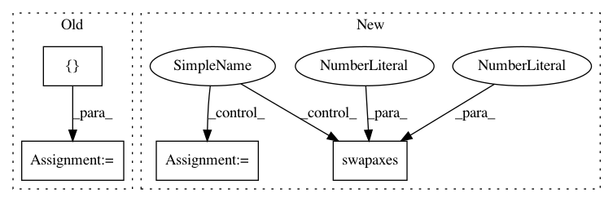

3c874575bf40e8b1fa2280371131a8f29ebb3e98,src/gluonnlp/models/roberta.py,RobertaModel,hybrid_forward,#RobertaModel#Any#Any#Any#,227
Before Change
bias_initializer=bias_initializer)
def hybrid_forward(self, F, tokens, valid_length):
outputs = []
embedding = self.get_initial_embedding(F, tokens)
contextual_embeddings, additional_outputs = self.encoder(embedding, valid_length)
outputs.append(contextual_embeddings)
After Change
def hybrid_forward(self, F, tokens, valid_length):
embedding = self.get_initial_embedding(F, tokens)
if self._layout != self._compute_layout:
contextual_embeddings, additional_outputs = self.encoder(F.np.swapaxes(embedding, 0, 1),
valid_length)
contextual_embeddings = F.np.swapaxes(contextual_embeddings, 0, 1)
else:
contextual_embeddings, additional_outputs = self.encoder(embedding, valid_length)
if self.use_pooler:
if isinstance(contextual_embeddings, list):
In pattern: SUPERPATTERN
Frequency: 3
Non-data size: 4
Instances
Project Name: dmlc/gluon-nlp
Commit Name: 3c874575bf40e8b1fa2280371131a8f29ebb3e98
Time: 2020-07-28
Author: xshiab@connect.ust.hk
File Name: src/gluonnlp/models/roberta.py
Class Name: RobertaModel
Method Name: hybrid_forward
Project Name: Calamari-OCR/calamari
Commit Name: 8d0d0c7a6db3904f0222cbe058388a92cf21a548
Time: 2021-02-06
Author: ChWick@users.noreply.github.com
File Name: calamari_ocr/ocr/dataset/imageprocessors/center_normalizer.py
Class Name: CenterNormalizer
Method Name: dewarp
Project Name: dmlc/gluon-nlp
Commit Name: 3c874575bf40e8b1fa2280371131a8f29ebb3e98
Time: 2020-07-28
Author: xshiab@connect.ust.hk
File Name: src/gluonnlp/models/mobilebert.py
Class Name: MobileBertModel
Method Name: hybrid_forward